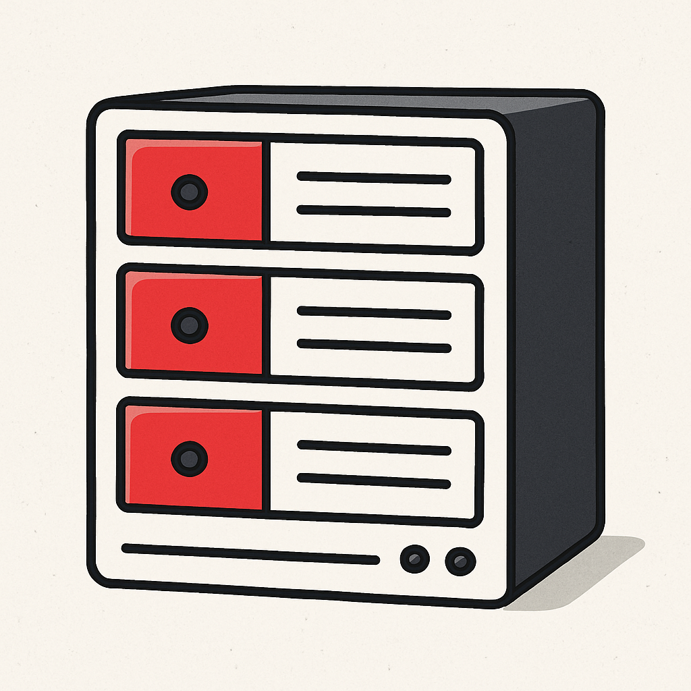

Нека да започваме


Компанията е основана през 2009г. с цел продажба на хардуер, главно лаптопи.
В следващите години компанията е един от главните вносители на Toshiba за страната.
Адаптиране към променящия се пазар и навлизащите системи за видеонаблюдение.
Компанията е една от наложилите се в обл. Пловдив за проектиране, монтаж и поддръжка на компютърни системи, мрежови услуги, сървъри, охранителни технологии, хардуер и много други.
С развитието си през годините създадохме трайни партньорства, които продължават и до днес. Тези взаимоотношения ни помагат да се развиваме, като създават чувство на дълг, кооперативност и доверие не само в нас, но и в клиентите ни.
Искате да се свържете с нас за запитване, на което не може да бъде отговорено в сайта? Можете да го направите чрез посочените по-долу контакти.
Телефон: +359 888 123 456
Email: office@cbs-plovdiv.bg
Адрес: ж.к. Христо Смирненски Западен, бул. "Пещерско Шосе" 113а, 4001 Пловдив, България (на ъгъла)
Ще използвате мрежата основно за офис задачи, онлайн срещи и споделяне на файлове, или имате по-високи изисквания като сървъри, видеонаблюдение или специализиран софтуер? Колкото по-ясно знаем какво искате да постигнете, толкова по-прецизно ще изградим решението.
Достатъчна ли е стандартна скорост, или ви трябва високоскоростна инфраструктура за по-големи натоварвания? Предпочитате ли кабелна връзка за максимална стабилност, или удобството на Wi-Fi е приоритет? Сигурността също е ключова – можем да изградим защитени VPN връзки, отделни мрежи за гости и защитни системи срещу външни заплахи.
Брой помещения, етажи, работни места – всичко това влияе върху планирането на мрежата. Ако вече имате частично окабеляване, можем да го използваме, а ако започваме от нулата – ще предложим най-подходящото решение за вашето пространство.
Можем да изградим базово, по-достъпно решение или да инвестирате в мрежа, която ще бъде устойчива и готова за разширяване години напред. Важното е решението да бъде в синхрон с вашите приоритети и визия за развитие.
След изграждането идва моментът с грижата за системата. Ние предлагаме абонаментна поддръжка, за да сте спокойни, че мрежата ви винаги работи безотказно. Ако имате собствен IT човек, можем да съдействаме с документация и консултации.
Всяка мрежа може да бъде придружена със схема, инструкции и информация за конфигурациите. Това е полезно при бъдещи промени. Ако е необходимо, можем да обучим вашия екип за основни действия – като свързване към Wi-Fi или работа със защитен достъп.


Сървърът е сърцето на вашата IT инфраструктура. Правилното планиране още в началото ви спестява бъдещи разходи, проблеми със сигурността и ограничаване на растежа на бизнеса.
Каква ще бъде ролята на сървъра – файлов сървър, база данни, виртуализация, видеонаблюдение или комбинация от няколко услуги.
Колко потребители ще работят със системата и какво натоварване очаквате – това определя процесор, RAM и дискова конфигурация.
Надеждност и защита на данните – RAID масиви, архивиране, резервно захранване (UPS) и защита от загуба на информация.
Сигурност и достъп – контрол на потребители, защитени връзки, VPN и защита от външни атаки.
Възможност за разширяване в бъдеще – допълнителни дискове, повече RAM и надграждане без спиране на работата.

Сървърът е сърцето на вашата IT инфраструктура. Правилното планиране още в началото ви спестява бъдещи разходи, проблеми със сигурността и ограничаване на растежа на бизнеса.
Каква ще бъде ролята на сървъра – файлов сървър, база данни, виртуализация, видеонаблюдение или комбинация от няколко услуги.
Колко потребители ще работят със системата и какво натоварване очаквате – това определя процесор, RAM и дискова конфигурация.
Надеждност и защита на данните – RAID масиви, архивиране, резервно захранване (UPS) и защита от загуба на информация.
Сигурност и достъп – контрол на потребители, защитени връзки, VPN и защита от външни атаки.
Възможност за разширяване в бъдеще – допълнителни дискове, повече RAM и надграждане без спиране на работата.